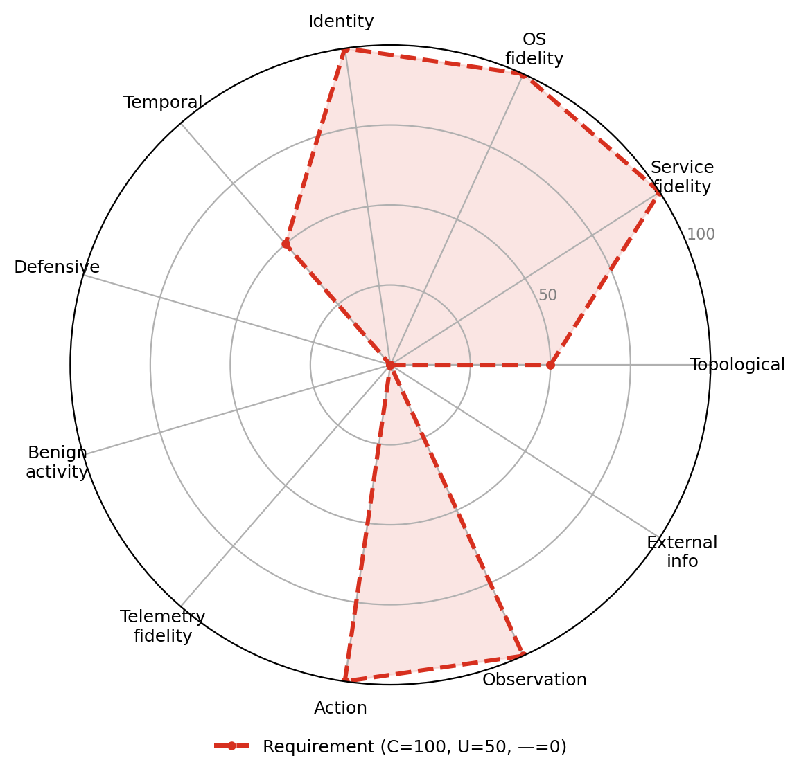

UC-A5 · Credential-based privilege escalation
Starting from an initial foothold, the attacker escalates to domain admin by stealing credentials and moving laterally through Active Directory trust relationships. This is the financial/ransomware-operator pattern: the realistic goal is to reach the target privilege level by the shortest and quietest path through the identity layer: Kerberos and NTLM exchanges, session tokens, group memberships, and misconfigured ACLs. It is demanding on service, operating-system, identity, action, and observation fidelity, which is why real-software environments support it well while abstract simulators do not.

Dimension requirement profile
| Dimension | Requirement |
|---|---|
| Topological realism | Useful |
| Service fidelity | Critical |
| OS fidelity | Critical |
| Identity realism | Critical |
| Temporal dynamics | Useful |
| Defensive realism | Not needed |
| Benign activity realism | Not needed |
| Telemetry fidelity | Not needed |
| Action realism | Critical |
| Observation realism | Critical |
| External information ecosystem | Not needed |